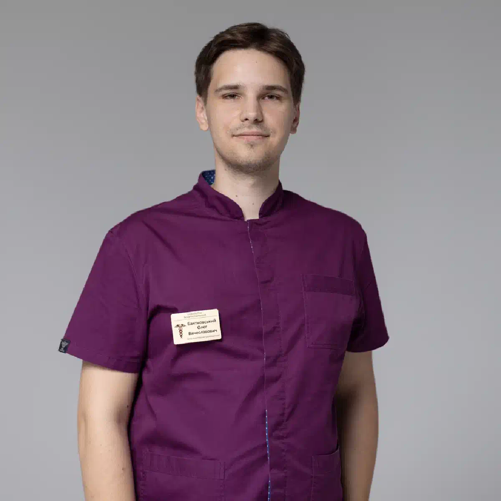

+38(068)
79 72 782
+38(068)
79 72 782Вызов нарколога на дом в Люботине
Анонимная медицинская помощь круглосуточно


Бесплатная консультация, работаем круглосуточно 24/7
Анонимная медицинская помощь круглосуточно

Дата написания: 24 окт. 2026 г.
Последнее обновление: 24 окт. 2026 г.
Вызов нарколога на дом в Люботине — возможность получить медицинскую помощь при алкогольной интоксикации, длительном запое, абстинентном синдроме и некоторых состояниях, связанных с употреблением психоактивных веществ. Выездная наркологическая служба позволяет организовать осмотр пациента, оценить тяжесть его состояния и при отсутствии противопоказаний провести необходимое лечение в домашних условиях. Помощь предоставляется с соблюдением врачебной тайны, индивидуальным подбором терапии и рекомендациями по дальнейшему восстановлению. При опасных симптомах пациенту требуется не домашнее лечение, а экстренная медицинская помощь.
Срочный вызов нарколога на дом рекомендуется при ухудшении самочувствия после длительного употребления алкоголя, появлении симптомов отмены спиртного или невозможности самостоятельно прекратить запой. Поводом для обращения могут стать выраженная слабость, тошнота, рвота, дрожь в руках, тревожность, потливость, бессонница и учащенное сердцебиение. Особенно важно своевременно получить медицинскую консультацию, если подобные состояния возникают после нескольких дней непрерывного употребления алкогольных напитков. Нарколог оценивает общее состояние пациента, уточняет продолжительность употребления спиртного, наличие хронических заболеваний и ранее перенесенных осложнений. На основании осмотра врач определяет, допустима ли помощь на дому или требуется лечение в стационаре. При потере сознания, судорогах, выраженной спутанности сознания, нарушении дыхания или подозрении на инсульт необходимо немедленно вызвать экстренную помощь по номеру 103.
Алкогольная интоксикация может сопровождаться нарушениями работы нервной системы, сердечно-сосудистой системы и желудочно-кишечного тракта. Выраженность симптомов зависит от количества употребленного алкоголя, индивидуальной переносимости, состояния печени, возраста и сопутствующих заболеваний. После продолжительного употребления спиртного ухудшение самочувствия может быть связано не только с интоксикацией, но и с развивающимся синдромом отмены. Наиболее распространенными симптомами являются сильная тошнота, повторная рвота, головная боль, выраженная жажда, слабость, тремор конечностей, тревожность, нарушение сна и колебания артериального давления. При появлении подобных жалоб консультация нарколога помогает определить возможные причины ухудшения состояния и выбрать безопасную тактику помощи. Особого внимания требуют пациенты с заболеваниями сердца, сахарным диабетом, нарушениями функции печени и почек. Самостоятельное применение лекарственных препаратов, особенно седативных средств в сочетании с алкоголем, может привести к опасным осложнениям. При тяжелом отравлении с нарушением сознания или дыхания необходима экстренная госпитализация.
Необходимость в наркологической помощи может возникнуть ночью, ранним утром, в выходной или праздничный день. Симптомы алкогольной абстиненции нередко усиливаются спустя несколько часов после прекращения употребления спиртного, поэтому откладывать обращение до следующего дня не всегда безопасно. Круглосуточный нарколог в Люботине позволяет обратиться за медицинской консультацией независимо от времени суток. При обращении диспетчер уточняет адрес пациента, возраст, основные жалобы, продолжительность запоя, наличие хронических заболеваний и препаратов, которые человек принимал ранее. Эта информация необходима для предварительной оценки ситуации и организации соответствующей медицинской помощи. Выезд врача осуществляется после согласования заявки и при наличии доступной медицинской бригады. В домашних условиях специалист может провести первичную диагностику, оценить необходимость медикаментозной терапии и объяснить родственникам, какие симптомы требуют немедленной госпитализации. Основным приоритетом остается безопасность пациента, а не проведение процедур на дому любой ценой.
Время прибытия нарколога зависит от местонахождения свободной медицинской бригады, загруженности специалистов, дорожной ситуации и точного адреса пациента. При оформлении заявки диспетчер сообщает ориентировочное время выезда и уточняет возможность оказания помощи в конкретном районе Люботина. Для организации срочного вызова нарколога желательно заранее сообщить, сколько дней продолжается употребление алкоголя, когда пациент последний раз принимал спиртное и какие симптомы наблюдаются в настоящий момент. Важно также предупредить о повышенном давлении, заболеваниях сердца, ранее возникавших судорогах и принимаемых лекарствах. До приезда специалиста не рекомендуется самостоятельно назначать пациенту снотворные, транквилизаторы или другие сильнодействующие препараты. Если состояние резко ухудшается, появляются судороги, потеря сознания, выраженная одышка или признаки острого нарушения мозгового кровообращения, необходимо сразу обратиться в экстренную медицинскую службу, не ожидая приезда нарколога.
Вывод из запоя на дому в Люботине — медицинская помощь, направленная на безопасное прекращение длительного употребления алкоголя, облегчение проявлений абстинентного синдрома и предупреждение осложнений. При регулярном употреблении спиртного организм адаптируется к воздействию этанола, поэтому резкое прекращение приема алкоголя у зависимого человека может сопровождаться выраженными нарушениями со стороны нервной и сердечно-сосудистой систем. Перед началом лечения нарколог проводит осмотр, оценивает артериальное давление, пульс, уровень сознания, признаки обезвоживания и выраженность симптомов отмены. Дополнительно выясняется длительность запоя, количество употребляемого алкоголя и наличие ранее перенесенных осложнений. При легком или умеренном состоянии и отсутствии противопоказаний врач может назначить лечение в домашних условиях. Оно направлено на уменьшение неприятных симптомов, коррекцию выявленных нарушений и стабилизацию самочувствия. При тяжелой абстиненции, алкогольном делирии, судорогах или значительных нарушениях жизненно важных функций требуется стационарная помощь.
Капельница от алкоголя на дому может применяться по назначению врача при наличии медицинских показаний, например при выраженном обезвоживании или невозможности восполнить жидкость обычным питьем. Инфузионная терапия позволяет вводить необходимые растворы внутривенно, однако не ускоряет существенно естественное выведение алкоголя из организма и не заменяет полноценное лечение абстинентного синдрома. Состав инфузии подбирается индивидуально после оценки состояния пациента. В зависимости от клинической ситуации врач может использовать растворы для коррекции водно-электролитного баланса и назначать дополнительные препараты по показаниям. При риске дефицита тиамина, особенно у людей с длительной алкогольной зависимостью, может потребоваться его введение для профилактики неврологических осложнений.
После продолжительного запоя состояние пациента может осложняться обезвоживанием, нарушениями электролитного баланса, дефицитом витаминов, расстройствами сна и выраженными симптомами алкогольной абстиненции. Особую опасность представляет период после резкого прекращения употребления спиртного, когда возможно развитие судорог, галлюцинаций и алкогольного делирия. Лечение алкогольной интоксикации после длительного запоя требует оценки не только текущих жалоб, но и общего состояния организма. Нарколог учитывает возраст пациента, наличие сердечно-сосудистых заболеваний, функциональное состояние печени и почек, предыдущий опыт лечения и продолжительность употребления алкоголя. При легких проявлениях врач может определить возможность амбулаторного лечения. В более сложных ситуациях требуется наблюдение в стационаре, лабораторная диагностика, контроль электролитов и применение лекарственных препаратов по индивидуальным показаниям.
Наркотическая ломка, или синдром отмены психоактивных веществ, развивается после прекращения либо значительного уменьшения употребления определенных наркотических препаратов. Ее проявления зависят от вещества, длительности употребления, степени сформировавшейся зависимости и индивидуального состояния организма. При опиоидной абстиненции возможны мышечные боли, озноб, потливость, беспокойство, бессонница, тошнота, рвота и диарея. Отмена некоторых седативных препаратов, включая бензодиазепины, может сопровождаться судорогами и другими угрожающими жизни осложнениями. Помощь нарколога при наркотической ломке начинается с определения возможного вещества, оценки выраженности симптомов и выявления противопоказаний для домашнего лечения. Врач может рекомендовать обследование, симптоматическую терапию или специализированное лечение зависимости.
Несмотря на возможность оказания наркологической помощи в домашних условиях, отдельные клинические ситуации требуют круглосуточного медицинского наблюдения. Решение о допустимости инфузионной терапии принимает врач после осмотра и оценки возможных рисков. Капельница от алкоголя на дому не должна использоваться как замена экстренной помощи при тяжелой интоксикации, угнетении сознания, нарушении дыхания, судорогах или подозрении на алкогольный делирий. В таких ситуациях пациенту необходима специализированная диагностика и лечение. Дополнительными ограничениями могут быть тяжелая сердечная недостаточность, декомпенсированные заболевания почек, выраженные нарушения электролитного баланса и другие состояния, при которых требуется лабораторный контроль и постоянное наблюдение. Врач также учитывает возможные противопоказания к отдельным лекарственным препаратам. Безопасное лечение предполагает не обязательное проведение капельницы, а выбор медицинских мероприятий, соответствующих реальным потребностям пациента.
Наркологический стационар необходим пациентам, состояние которых требует непрерывного наблюдения, расширенной диагностики или проведения лечения, недоступного в домашних условиях. Госпитализация особенно важна при развитии тяжелого алкогольного абстинентного синдрома и наличии высокого риска осложнений. Показаниями для экстренной медицинской оценки являются судороги, галлюцинации, выраженная дезориентация, нарушение сознания, затрудненное дыхание, сильная боль в груди и признаки острого нарушения мозгового кровообращения. Опасность также представляют неукротимая рвота, тяжелое обезвоживание и резкие нарушения сердечного ритма. Пациентам пожилого возраста, беременным женщинам и людям с серьезными хроническими заболеваниями может потребоваться стационарное лечение даже при относительно умеренных первоначальных симптомах. При наличии таких признаков необходимо вызвать экстренную медицинскую помощь по номеру 103. Своевременная госпитализация позволяет проводить мониторинг жизненно важных показателей, корректировать нарушения обмена веществ и снижать риск тяжелых осложнений.
Стоимость вызова нарколога на дом в Люботине начинается от 2199 грн.
| Популярные услуги | Цена |
|---|---|
| Нарколог Харьков | От 1500 грн |
| Капельница от алкоголя | От 2199 грн |
| Вывод из запоя на дому | От 2199 грн |
| Кодирование от алкоголизма | От 6000 грн |
Лечение интоксикации на дому начинается с консультации и первичного медицинского осмотра. Нарколог собирает анамнез, уточняет количество и продолжительность употребления алкоголя либо других психоактивных веществ, оценивает основные жалобы и возможные риски осложнений. Первичная диагностика может включать измерение артериального давления, частоты пульса, температуры тела, сатурации и оценку неврологического состояния. При необходимости врач рекомендует дополнительные обследования или госпитализацию. После определения степени тяжести состояния составляется индивидуальный план лечения. В него могут входить восполнение жидкости, коррекция выявленных нарушений, применение лекарственных препаратов по показаниям и мероприятия, направленные на облегчение симптомов отмены. Продолжительность терапии зависит от клинической картины. Некоторым пациентам достаточно разового осмотра и рекомендаций, другим требуется повторное наблюдение или лечение в стационаре. Завершающим этапом является консультация по восстановлению, профилактике осложнений и дальнейшей терапии алкогольной либо наркотической зависимости.
Вывод из запоя помогает справиться с острыми проявлениями абстиненции и стабилизировать физическое состояние, однако не устраняет причины формирования алкогольной зависимости. После улучшения самочувствия у человека может сохраняться патологическая тяга к спиртному, повышенная тревожность, эмоциональная нестабильность и склонность к повторному употреблению алкоголя. Для предупреждения рецидивов рекомендуется комплексное лечение алкогольной зависимости, включающее консультации нарколога, психотерапевтическую поддержку, работу с факторами риска и, при наличии показаний, медикаментозную противорецидивную терапию. Особое значение имеет формирование устойчивой мотивации к трезвости. Врач помогает пациенту разобраться в причинах употребления алкоголя, определить потенциально опасные ситуации и подобрать подходящую программу дальнейшего восстановления.
После стабилизации состояния пациент может обсудить с врачом дополнительные методы лечения зависимости, включая кодирование от алкоголизма. Под этим названием объединяют различные медикаментозные и психотерапевтические подходы, которые отличаются механизмом действия, показаниями и уровнем доказанной эффективности. Во время консультации нарколог выясняет стаж употребления спиртного, наличие хронических заболеваний, предыдущий опыт лечения и готовность пациента соблюдать трезвость. При выборе медикаментозной терапии могут рассматриваться препараты на основе дисульфирама или налтрексона при наличии соответствующих показаний. Перед назначением лечения необходимо оценить противопоказания, возможные взаимодействия препаратов и период воздержания от алкоголя. Его продолжительность зависит от конкретного метода и состояния пациента. Проведение процедуры непосредственно во время запоя или тяжелой абстиненции недопустимо.
Анонимная наркологическая помощь в Люботине позволяет обратиться за консультацией и организовать выезд врача с соблюдением конфиденциальности персональной и медицинской информации. Сведения о состоянии здоровья пациента относятся к врачебной тайне и обрабатываются в соответствии с требованиями законодательства. Обратиться за помощью можно при алкогольной интоксикации, симптомах абстиненции, длительном запое и других состояниях, требующих оценки нарколога. После уточнения жалоб специалист определяет возможность проведения лечения на дому либо рекомендует стационарную помощь. При своевременном обращении можно раньше выявить опасные симптомы, уменьшить риск осложнений и определить дальнейшую тактику лечения. Медицинская помощь должна учитывать индивидуальные особенности пациента и проводиться только с его информированного согласия, за исключением предусмотренных законом неотложных ситуаций. Если вам или вашему близкому необходим вызов нарколога на дом в Люботине, обратитесь за предварительной консультацией.
Телефон для консультации и вызова нарколога на дом в Харькове: +38(050-021-69-57)

Статья проверена экспертом
Робулец Ольга
Врач нарколог, ординатор
Возможно интересная статья:
Лечение тремора и тревоги после алкоголя

Начинать лечение стоит уже тогда, когда употребление алкоголя становится регулярным, человеку сложно контролировать количество выпитого, появляются запои, абстинентный синдром, проблемы со здоровьем, работой или отношениями с близкими. Чем раньше человек обращается за помощью, тем меньше риск тяжёлых осложнений и прогрессирования зависимости.
Алкогольная зависимость относится к хроническим расстройствам, однако при правильно подобранном лечении можно добиться длительной устойчивой ремиссии и полностью отказаться от употребления алкоголя. Результат зависит от мотивации пациента, тяжести зависимости, продолжительности употребления и соблюдения рекомендаций врача.
Лечение начинается с консультации и оценки состояния пациента. Врач уточняет длительность и характер употребления алкоголя, наличие запоев, симптомы абстиненции, хронические заболевания и предыдущие попытки лечения. Если пациент находится в запое или испытывает выраженный синдром отмены, первым этапом может быть детоксикация и стабилизация состояния.
Отдельные этапы лечения алкогольной зависимости могут проводиться на дому. Это может быть вывод из запоя, детоксикация, лечение лёгкого или умеренного абстинентного синдрома, консультация врача и последующее медикаментозное сопровождение.
Стационар может потребоваться при тяжёлом абстинентном синдроме, длительном запое, судорогах, галлюцинациях, спутанности сознания, подозрении на алкогольный делирий, выраженных нарушениях давления или сердечного ритма, а также при тяжёлых сопутствующих заболеваниях. В стационаре состояние пациента можно контролировать круглосуточно.
Если пациент находится в запое, первым этапом обычно становится безопасное прекращение употребления алкоголя и лечение абстинентного синдрома. После стабилизации физического состояния можно переходить к дальнейшему лечению зависимости, противорецидивной терапии, психотерапии и другим методам.
Лечение может включать медикаментозную терапию, детоксикацию, противорецидивное лечение, психотерапию, работу с мотивацией, кодирование и реабилитационные программы. Обычно наибольшую эффективность даёт комплексный подход, когда врач подбирает методы с учётом состояния и особенностей конкретного пациента.
Кодирование может использоваться как один из этапов лечения алкогольной зависимости. Его задача — помочь человеку сохранять трезвость и снизить риск употребления алкоголя в определённый период. При этом кодирование не устраняет все психологические и поведенческие причины зависимости, поэтому часто сочетается с консультациями специалиста, психотерапией и другими методами лечения.
Плановое лечение алкогольной зависимости обычно проводится при информированном согласии самого пациента. Если человек не хочет лечиться, родственники могут обратиться за консультацией и обсудить со специалистом способы мотивации к лечению. При состояниях, представляющих непосредственную угрозу жизни или здоровью, необходима экстренная медицинская помощь.
Давление, угрозы и постоянные конфликты часто усиливают сопротивление. Родственникам лучше спокойно обсуждать конкретные последствия употребления и предлагать консультацию специалиста. Может использоваться мотивационная беседа, цель которой — помочь человеку увидеть проблему и самостоятельно принять решение о начале лечения.
После стабилизации важно продолжать лечение и не ограничиваться только детоксикацией или выводом из запоя. Снизить риск срыва помогают регулярные консультации специалиста, психотерапия, противорецидивное лечение, отказ от ситуаций, связанных с употреблением алкоголя, поддержка близких и изменение привычного образа жизни.
Реабилитация требуется не каждому пациенту в одинаковом объёме, однако при сформированной зависимости, повторных запоях и частых срывах она может существенно дополнять основное лечение. Реабилитационная программа помогает работать с психологическими причинами употребления, формировать новые привычки и навыки трезвой жизни и снижать риск возвращения к алкоголю.
Анонимно

Ну в хлопців просто золоті руки й світла голова, мене капали Олексій та Владислав, буквально за декілька сеансів я наче заново народився, до цього пив більше 3х тижнів, не міг зупинитись, дуже радий що знайшов саме цих спеціалістів, всім рекомендую
Анонимно
В течение нескольких лет я злоупотреблял алкоголь, что привело к увольнению с работы и вызвало у меня мысли о суициде. Понимая, что такой образ жизни неприемлем, я обратился за помощью в клинику “Амбрела”. Здесь я смог преодолеть свою зависимость от спиртного благодаря заботливым и опытным врачам, а также эффективной системе лечения. Спустя более года я полностью избавился от желания употреблять алкоголь, и теперь моя жизнь вернулась в норму. Я даже не приближаюсь к спиртному! Благодарю врачей клиники “Амбрела” за их помощь и заботу.
Анонимно
Я обращался за помощью в различные клиники, пытаясь избавиться от своей зависимости от алкоголя, но без особых успехов. Никак не мог справиться с желанием прибегнуть к бутылке, пока друг не посоветовал мне обратиться в центр “Амбрелла”. Я записался на прием и был поражен заботливым отношением к пациентам. Уже прошло два года, и теперь я смотрю на алкоголь с абсолютной равнодушием, активно занимаюсь спортом и улучшил отношения в семье. Благодаря центру “Амбрелла” моя жизнь была спасена от алкогольной зависимости!
Анонимно
Хочу выразить свою благодарность врачам из центра алкоголизма “Амбрела” за то, что они буквально спасли мою жизнь. В течение последнего года я сильно увлекался питьем, и все это привело к катастрофическим последствиям. Хотя я ходил на терапевтические сеансы, но безрезультатно. Тогда я нашел адрес клиники “Амбрела” в интернете, изучил отзывы и информацию о центре, и записался на прием. Там мне сразу предложили методику лечения, которая помогла не только справиться с физической ломкой, но и психической зависимостью от алкоголя. Не буду распространяться, скажу только одно - после пребывания в этой клинике я стал другим человеком, и навсегда забыл, что такое привкус алкоголя. Больше меня не тянет на это! Я искренне верю, что в центре “Амбрела” трудятся настоящие целители душ!
Анонимно
После сложного развода мой сын начал подавлять свою обиду и горе употреблением алкоголя. Он старался скрывать это от меня, но я, как мать, почувствовала, что что-то не так. В конечном итоге, ситуация стала критической. Моя знакомая посоветовала мне обратиться в клинику “Амбрела”. Я была приятно удивлена их работой! Они помогли сыну преодолеть очередной период злоупотребления алкоголем, и с тех пор прошел уже более года, и он совсем не пьет.
Анонимно
Благодаря вашей помощи, моя семья была спасена. Я с трудом уговорила мужа начать лечение, и последний каплей был пьяное ДТП. К счастью, в аварии никто не пострадал, но это был для него сигнал к действию. Он наконец согласился пройти курс лечения на дому, в стационар не хотел ложиться. Лечение было трудным, и были моменты, когда срыв был настолько близок, но благодаря вашему центру Амбрелла мы справились с этим.
Анонимно
Для меня эта клиника стала настоящим спасением! Долгое время я упорно отказывался от лечения, уверен был, что со мной все в порядке. Но к счастью, семья уговорила меня попробовать. И сегодня я чувствую себя невероятно счастливым, осознавая, что мне абсолютно не нужен алкоголь. Огромное спасибо за помощь и поддержку, которые я получил здесь! Я благодарен вам за новую возможность жить полноценной и счастливой жизнью!
Анонимно
Выражаю благодарность ребятам, которые оказали мне помощь и не отвернулись. Уже 10 месяцев я остаюсь чистой. Благодарю за то, что помогли найти новый путь в моей жизни.
Номер телефона:
+380 (68) 797 27 82
+380 (50) 021 69 57
Адрес наркологического центра вашего города уточняйте по
телефону
Работаем в: Киеве, Одессе, Львове, Харькове, Днепре,
Запорожье, Черкассах, Чугуеве, Черноморске, Каменском
Telegram: t.me/umbrellaplus
График работы: Круглосуточно